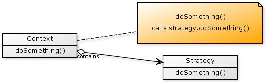
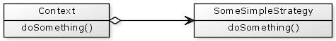
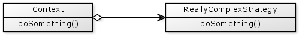
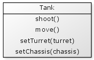
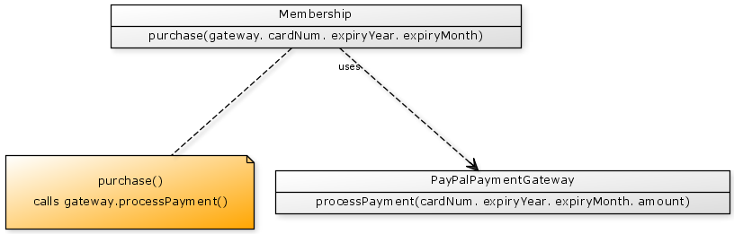

The strategy pattern provides a way for you to easily change the way an object behaves at runtime. It essentially allows you to "plug" some behaviour into an object.
For a CFML implementation there are two kinds of objects in this pattern; a Context and a Strategy.
The Context object is our main object; when we need a certain task done we ask the Context object to do it. Contained within the Context object is our Strategy object. When we ask the Context to perform a task, it asks the Strategy object to perform either some or all of the work.

If we were to replace the Strategy object with a different Strategy object then this would then affect the overall behaviour of the Context.
In other words, we may initially start out having a Context with one kind of Strategy object:

Calling context.doSomething() performs some simple behaviour.
But we may then change the Strategy object to something a more complicated.

Calling context.doSomething() now performs a more complex behaviour.
There area number of ways to provide the Strategy to the Context, but some common techniques are:
1) Provide the Strategy to the Context's init() function:
{% highlight cfm %}2) Provide the Strategy via a setter
{% highlight cfm %}3) Provide the Strategy directly to the function that needs it
{% highlight cfm %}Let's start with a simple game that demonstrates the idea of the Strategy pattern. In this game you have two tanks that move around a playing field and try to shoot each other. Your tank objects may look something like this:
Our simple tank object is responsible for both shooting and moving around.
{% highlight cfm %}This is great, but the game would be more interesting if you could collect upgrades that either increased the damage you inflict or increased your speed.
Let's assume we can upgrade two aspects of our tank; the turret which affects the damage we inflict, and the chassis which determines how our tank moves. Let's revise our tank object to allow the tank turrets and chassis to be upgraded via setTurret() and setChassis() functions.

Now that we have a turret and a chassis, we can pass on the responsibility of shooting and moving to these new tank parts.
{% highlight cfm %}The setTurret() and setChassis() functions make it easy for us to change the shooting and movement behaviour of the tank.
For example, we may start with a basic turret that fires basic shells, but later upgrade to a turbo turret that fires shells at a faster rate. We might even upgrade to an anti-gravity chassis which allows our tank to fly.
Let's take a look at some example code that demonstrates how our new tank object might be used. First we need to create a couple of different turrets and chassis.
{% highlight cfm %}Now let's put our tank into action.
{% highlight cfm %}When making an online payment you may have a choice of which payment gateway to use; you may choose to use PayPal, Google Checkout or perhaps a local payment gateway provider. The Strategy pattern can be used to assign which payment gateway is used to handle the payment.
For this example, suppose you are developing a membership system and when a person registers or renews they are required to make a payment.
We may have a Membership object that knows the amount required for the transaction.
We also have a Payment Gateway object that knows how to process a payment. Let's assume that in this instance we need to use a PayPal payment gateway.

When we call purchase() on the membership object, it asks the gateway object to perform some of the work.
{% highlight cfm %}The PayPalPaymentGateway object takes care of authenticating with PayPal and passing on any merchant details.
If we want to swap the payment gateway to be the GoogleCheckout provider, then we would create a GoogleCheckoutPaymentGateway that also implements a processPayment() function with the same parameters.
So let's take a look at how we might use our membership object.
{% highlight cfm %}The final point to notice in this example is that the Payment Gateway is provided at the point of purchase rather than via the init() function or a setter function.
Within CFML functions may be passed around as variables. This allows an alternative technique for implementing a Strategy pattern; rather than passing Strategy objects to the Context object you can pass Strategy functions to the Context object.
For example, suppose we need to calculate a journey from one location to another. We may provide an option to either travel the quick route or the scenic route. We can create a TravelStrategies object that knows how to calculate the quick or scenic routes.
{% highlight cfm %}Then we may have a TravelPlanner that needs to use a travel strategy.
{% highlight cfm %}So to use our objects we may write:
{% highlight cfm %}The important thing to notice here is that we pass a function into the setTravelStrategy() function rather than an object. Then when we call the getPlan() function is just executes the travelStrategy function without knowledge of which strategy it actually is.
See the discussion of this page on the OOCF mailing list
http://groups.google.com.au/group/coldfusionoo/browse_thread/thread/60661c9abbb38ec9
Wikipedia - Strategy Pattern
http://en.wikipedia.org/wiki/Strategy_pattern